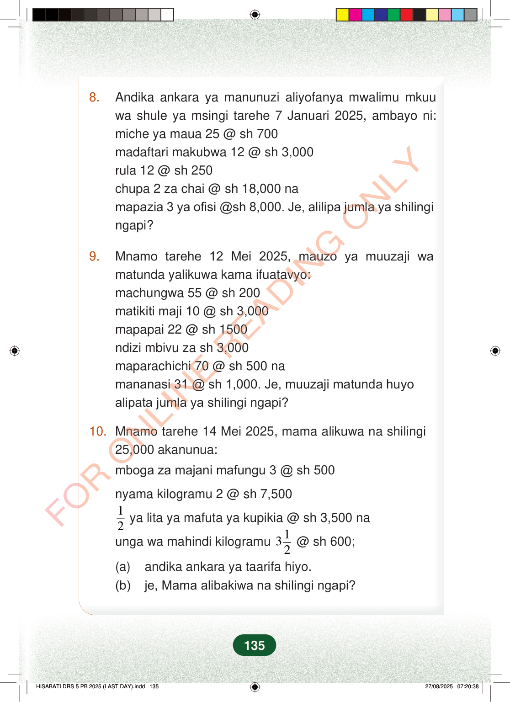

8.Andika ankara ya manunuzi aliyofanya mwalimu mkuuwa shule ya msingi tarehe 7 Januari 2025, ambayo ni:miche ya maua 25 @ sh 700madaftari makubwa 12 @ sh 3,000rula 12 @ sh 250chupa 2 za chai @ sh 18,000 namapazia 3 ya ofisi @sh 8,000. Je, alilipa jumla ya shilingingapi?9.Mnamo tarehe 12 Mei 2025, mauzo ya muuzaji wamatunda yalikuwa kama ifuatavyo:machungwa 55 @ sh 200matikiti maji 10 @ sh 3,000mapapai 22 @ sh 1500ndizi mbivu za sh 3,000maparachichi 70 @ sh 500 namananasi 31 @ sh 1,000. Je, muuzaji matunda huyoalipata jumla ya shilingi ngapi?10.Mnamo tarehe 14 Mei 2025, mama alikuwa na shilingi25,000 akanunua:mboga za majani mafungu 3 @ sh 500nyama kilogramu 2 @ sh 7,50012ya lita ya mafuta ya kupikia @ sh 3,500 naunga wa mahindi kilogramu132@ sh 600;(a)andika ankara ya taarifa hiyo.(b)je, Mama alibakiwa na shilingi ngapi?135
8. Andika ankara ya manunuzi aliyofanya mwalimu mkuu wa shule ya msingi tarehe 7 Januari 2025, ambayo ni: miche ya maua 25 @ sh 700 madaftari makubwa 12 @ sh 3,000 rula 12 @ sh 250 chupa 2 za chai @ sh 18,000 na mapazia 3 ya ofisi @sh 8,000. Je, alilipa jumla ya shilingi ngapi?
9. Mnamo tarehe 12 Mei 2025, mauzo ya muuzaji wa matunda yalikuwa kama ifuatavyo: machungwa 55 @ sh 200 matikiti maji 10 @ sh 3,000 mapapai 22 @ sh 1500 ndizi mbivu za sh 3,000 maparachichi 70 @ sh 500 na mananasi 31 @ sh 1,000. Je, muuzaji matunda huyo alipata jumla ya shilingi ngapi?
10. Mnamo tarehe 14 Mei 2025, mama alikuwa na shilingi 25,000 akanunua:
mboga za majani mafungu 3 @ sh 500
nyama kilogramu 2 @ sh 7,500
1 2 ya lita ya mafuta ya kupikia @ sh 3,500 na
unga wa mahindi kilogramu 1 32 @ sh 600;
(a) andika ankara ya taarifa hiyo. (b) je, Mama alibakiwa na shilingi ngapi?
135
8.Andika ankara ya manunuzi aliyofanya mwalimu mkuu wa shule ya msingi tarehe 7 Januari 2025, ambayo ni:miche ya maua 25 @ sh 700madaftari makubwa 12 @ sh 3,000rula 12 @ sh 250chupa 2 za chai @ sh 18,000 namapazia 3 ya ofisi @ sh 8,000.Je, alilipa jumla ya shilingi ngapi?9.Mnamo tarehe 12 Mei 2025, mauzo ya muuzaji wa matunda yalikuwa kama ifuatavyo:machungwa 55 @ sh 200matikiti maji 10 @ sh 3,000mapapai 22 @ sh 1500ndizi mbivu za sh 3,000maparachichi 70 @ sh 500 namananasi 31 @ sh 1,000.Je, muuzaji matunda huyo alipata jumla ya shilingi ngapi?10.Mnamo tarehe 14 Mei 2025, mama alikuwa na shilingi 25,000 akanunua:mboga za majani mafungu 3 @ sh 500nyama kilogramu 2 @ sh 7,500<math><mfrac><mn>1</mn><mn>2</mn></mfrac></math> ya lita ya mafuta ya kupikia @ sh 3,500 naunga wa mahindi kilogramu <math><mrow><mn>3</mn><mfrac><mn>1</mn><mn>2</mn></mfrac></mrow></math> @ sh 600;(a) andika ankara ya taarifa hiyo.(b) je, Mama alibakiwa na shilingi ngapi?